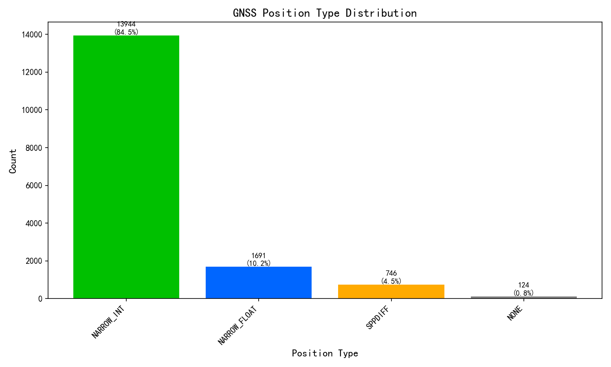
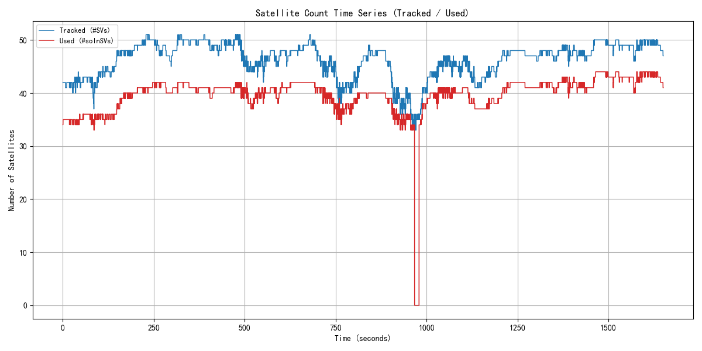
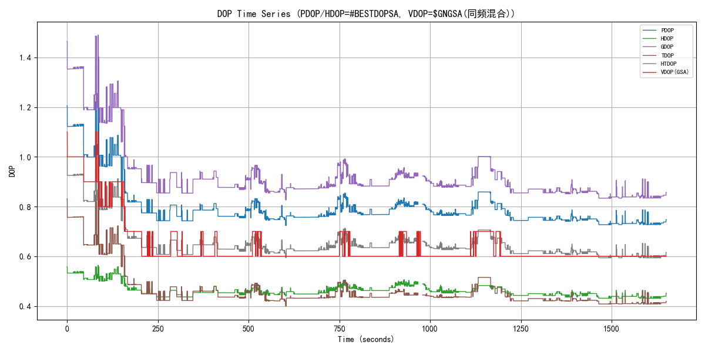
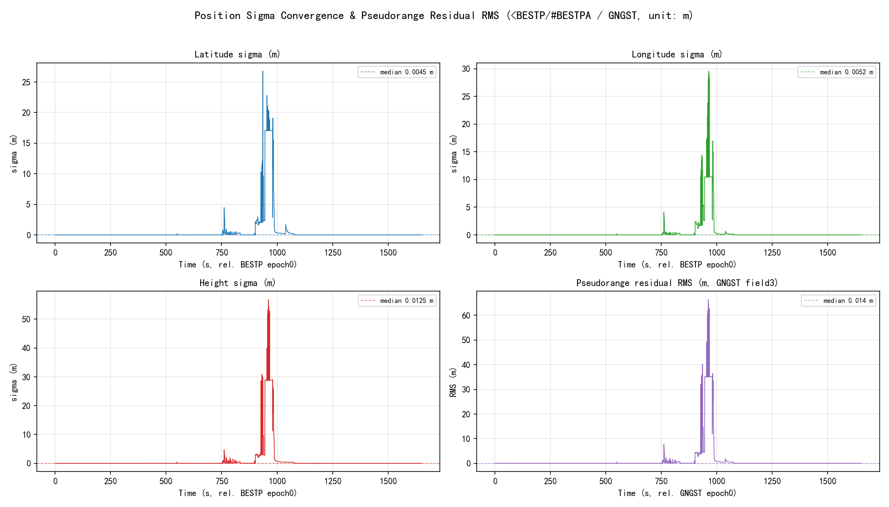
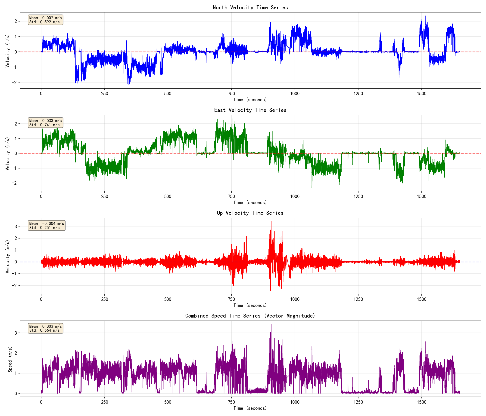
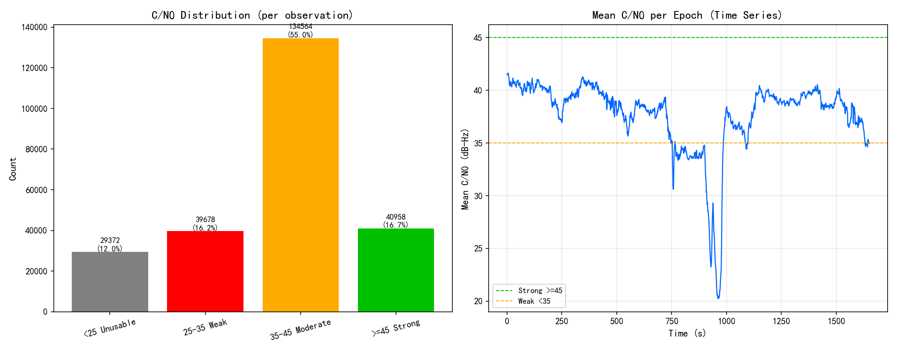
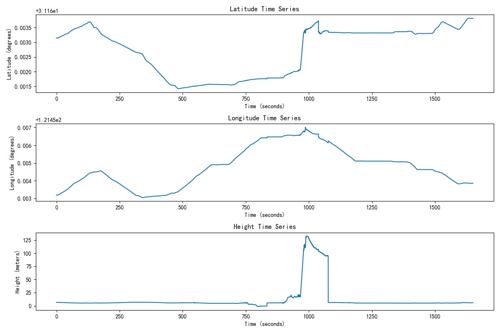
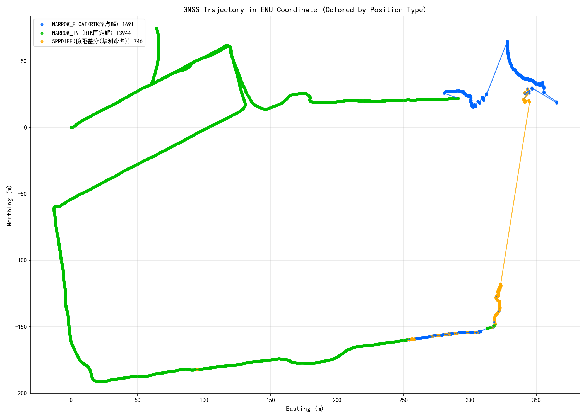
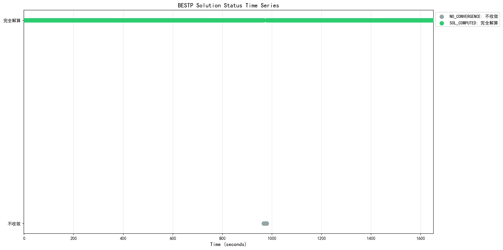

分析输入(COM1/ASCII): 0921复杂场景-华测-多log.log | 生成时间: 2026-09-21 15:44:02 | 分析工具: 华测 HUACE Kinematic Analyzer
| 报文类型 | 数量 | 占比 |
|---|---|---|
| $GPGSV | 51910 | 10.3% |
| $GLGSV | 29625 | 5.9% |
| $GAGSV | 47145 | 9.3% |
| $GBGSV | 64621 | 12.8% |
| $GQGSV | 31542 | 6.2% |
| $GIGSV | 16241 | 3.2% |
| $GNGSA | 96800 | 19.2% |
| $GNGST | 16506 | 3.3% |
| #BESTDOPSA | 16506 | 3.3% |
| $GNGGA | 33011 | 6.5% |
| #BESTVA | 16505 | 3.3% |
| #ENVSTATUSA | 16495 | 3.3% |
| #FILTERDBGA | 1772 | 0.4% |
| #BESTPA | 16505 | 3.3% |
| #RANGEA | 1651 | 0.3% |
| #SATVIS2A | 13208 | 2.6% |
| $q | 10 | 0.0% |
| < | 128 | 0.0% |
| 8 |
0.0% |
|
| #t | 1 | 0.0% |
| #1 | 1 | 0.0% |
| #RTKPA | 16505 | 3.3% |
| #RTKVA | 16505 | 3.3% |
| $= | 1 | 0.0% |
| #Kqr | 1 | 0.0% |
| $' | 2 | 0.0% |
| $ | 93 | 0.0% |
| 2 |
0.0% |
|
| #A | 2 | 0.0% |
| #q | 8 | 0.0% |
| #BESTPOSA | 1651 | 0.3% |
| $F | 1 | 0.0% |
| # | 149 | 0.0% |
| #~ | 1 | 0.0% |
| $o1 | 1 | 0.0% |
| #r | 5 | 0.0% |
| #a) | 3 | 0.0% |
| $ga y | 1 | 0.0% |
| 2 |
0.0% |
|
<| 1 |
0.0% |
|
| $W | 1 | 0.0% |
| $^a | 1 | 0.0% |
| 1 |
0.0% |
|
| #J | 3 | 0.0% |
| $`q | 1 | 0.0% |
| 2 |
0.0% |
|
| 8 |
0.0% |
|
| #@q | 1 | 0.0% |
| $C | 4 | 0.0% |
| $L | 1 | 0.0% |
| 1 |
0.0% |
|
| #a | 4 | 0.0% |
| #?q | 1 | 0.0% |
| 2 |
0.0% |
|
| #] | 1 | 0.0% |
| #! | 1 | 0.0% |
| ##RTKPA | 2 | 0.0% |
| #v | 1 | 0.0% |
| $\6a)( | 1 | 0.0% |
| $. | 4 | 0.0% |
| $b | 1 | 0.0% |
| 2 | 0.0% | |
| $T | 2 | 0.0% |
| $k | 1 | 0.0% |
| #As | 1 | 0.0% |
| #s | 2 | 0.0% |
| 1 |
0.0% |
|
| 1 |
0.0% |
|
| <#RTKVA,28.0,0,0,COM1,FINESTEERING,2437,111271300,ab0acbc1,00000200;SOL_COMPUTED,NARROW_INT,0,0.9290,242.519490,0.0704,0.000,1.300,0*04bd33c1 | 1 | 0.0% |
| #bq | 1 | 0.0% |
| $a | 3 | 0.0% |
| #e | 2 | 0.0% |
| $8a | 1 | 0.0% |
| <- | 2 | 0.0% |
| 1 |
0.0% |
|
| 1 |
0.0% |
|
| #Qa | 1 | 0.0% |
| $r | 6 | 0.0% |
| 1 | 0.0% | |
| $\ | 2 | 0.0% |
| #`P k% | 1 | 0.0% |
| <$GNGGA,065453.60,3109.76345157,N,12127.20001294,E,4,40,0.5,6.762,M,11.031,M,0.6,1793*52 | 1 | 0.0% |
| #.q | 1 | 0.0% |
| #Vq( | 1 | 0.0% |
| #U | 3 | 0.0% |
| $|C | 1 | 0.0% |
| $y | 1 | 0.0% |
| #[ | 1 | 0.0% |
| $cu | 1 | 0.0% |
| 1 |
0.0% |
|
| $Z | 1 | 0.0% |
| $n | 1 | 0.0% |
| $## | 1 | 0.0% |
| $F( | 1 | 0.0% |
| #$ | 1 | 0.0% |
| $3 | 2 | 0.0% |
| $$GNGGA | 2 | 0.0% |
| $` | 1 | 0.0% |
| $8r | 1 | 0.0% |
| #n | 3 | 0.0% |
| 4 |
0.0% |
|
| $P | 2 | 0.0% |
| 1 |
0.0% |
|
| #~X | 1 | 0.0% |
| $X | 1 | 0.0% |
| $z#BESTPA | 1 | 0.0% |
| 1 | 0.0% | |
| $wq | 1 | 0.0% |
| $NW | 1 | 0.0% |
| $-W | 1 | 0.0% |
| $m | 3 | 0.0% |
| #- | 3 | 0.0% |
| $+ | 1 | 0.0% |
| $# | 2 | 0.0% |
| $p | 1 | 0.0% |
| $V | 1 | 0.0% |
| <-q | 1 | 0.0% |
| #i | 1 | 0.0% |
| 2 |
0.0% |
|
| #m | 1 | 0.0% |
| $S | 2 | 0.0% |
| 1 |
0.0% |
|
| $hC | 1 | 0.0% |
| <} | 2 | 0.0% |
| $w | 1 | 0.0% |
| #. | 1 | 0.0% |
| #k | 1 | 0.0% |
| <.x | 1 | 0.0% |
| 1 |
0.0% |
|
| <. | 1 | 0.0% |
| $i | 2 | 0.0% |
| #%a | 1 | 0.0% |
| <.r | 1 | 0.0% |
| #0 | 2 | 0.0% |
| $1 | 2 | 0.0% |
| 2 |
0.0% |
|
| #TC | 1 | 0.0% |
| ${ | 1 | 0.0% |
| #c | 1 | 0.0% |
| #V~a | 1 | 0.0% |
| $|R | 1 | 0.0% |
| $Q | 1 | 0.0% |
| #wC | 1 | 0.0% |
| $H | 1 | 0.0% |
| $) | 2 | 0.0% |
| 1 |
0.0% |
|
| #hUd | 1 | 0.0% |
| #3 | 2 | 0.0% |
| <# | 2 | 0.0% |
| <|W" | 1 | 0.0% |
| $O | 1 | 0.0% |
| <) | 3 | 0.0% |
| 3 |
0.0% |
|
| $% | 2 | 0.0% |
| 1 |
0.0% |
|
| #3r | 1 | 0.0% |
| $kN | 1 | 0.0% |
| <2 | 1 | 0.0% |
| $f | 1 | 0.0% |
| #)M | 1 | 0.0% |
| <` | 2 | 0.0% |
| $M | 1 | 0.0% |
| $< | 1 | 0.0% |
| #% | 1 | 0.0% |
| #B | 1 | 0.0% |
| $Nc | 1 | 0.0% |
| $E | 1 | 0.0% |
| <); | 1 | 0.0% |
| <1q | 1 | 0.0% |
| #w | 1 | 0.0% |
| #* | 3 | 0.0% |
| 1 |
0.0% |
|
| $/c/ | 1 | 0.0% |
| $I | 1 | 0.0% |
| 1 |
0.0% |
|
| <}q | 1 | 0.0% |
| <%q | 1 | 0.0% |
| #q 1 | 1 | 0.0% |
| $q 8 | 1 | 0.0% |
| #)Q ^ | 1 | 0.0% |
| #G | 1 | 0.0% |
| #b- | 1 | 0.0% |
| <$a)v | 1 | 0.0% |
| 1 |
0.0% |
|
| #Q)h | 1 | 0.0% |
| <_ | 1 | 0.0% |
| $ia | 1 | 0.0% |
| 1 |
0.0% |
|
| $a)8 | 1 | 0.0% |
| #a)> | 1 | 0.0% |
| $-E | 1 | 0.0% |
| #E | 2 | 0.0% |
| $aa) | 1 | 0.0% |
| $a) | 1 | 0.0% |
| <*a | 1 | 0.0% |
| $7a T | 1 | 0.0% |
| 1 |
0.0% |
|
| #gb | 1 | 0.0% |
| $( | 1 | 0.0% |
| <6q | 1 | 0.0% |
| $o | 1 | 0.0% |
| #2B | 1 | 0.0% |
| $_ | 1 | 0.0% |
| $yB | 1 | 0.0% |
| $v | 1 | 0.0% |
| $#BESTPA | 3 | 0.0% |
| $C= | 1 | 0.0% |
| #@ | 1 | 0.0% |
| <" | 1 | 0.0% |
| 1 |
0.0% |
|
| 1 | 0.0% | |
| $> | 1 | 0.0% |
| 2 |
0.0% |
|
| $c | 1 | 0.0% |
| #M | 1 | 0.0% |
| #Oyb | 1 | 0.0% |
| 1 |
0.0% |
|
| #\mr | 1 | 0.0% |
| <> | 2 | 0.0% |
| 1 |
0.0% |
|
| 1 |
0.0% |
|
| #2 | 2 | 0.0% |
| <: | 1 | 0.0% |
| #9 | 1 | 0.0% |
| #3t | 1 | 0.0% |
| $" | 1 | 0.0% |
| 1 |
0.0% |
|
| $|s K | 1 | 0.0% |
| ##BESTPA | 5 | 0.0% |
| 1 |
0.0% |
|
| #ESR | 1 | 0.0% |
| 1 |
0.0% |
|
| #b | 2 | 0.0% |
| $$GPGSV | 1 | 0.0% |
| <#RTKPA,33.5,0,0,COM1,FINESTEERING,2437,112026800,ab0acbc1,00000000;SOL_COMPUTED,NARROW_FLOAT,WGS84,00,31.16355483396,121.45666622613,114.7718,11.0428,0.2545,0.1297,0.4752,0.800,0.800,43,40,32,35,8008,37,1f,07,00,1793*efe061e6 | 1 | 0.0% |
$| 1 |
0.0% |
|
| #Tr | 1 | 0.0% |
| 1 |
0.0% |
|
| #J$" | 1 | 0.0% |
| $m"3 | 1 | 0.0% |
| ##3 | 1 | 0.0% |
| 1 |
0.0% |
|
| 1 | 0.0% | |
| $q' | 1 | 0.0% |
| <`[q | 1 | 0.0% |
| $da | 1 | 0.0% |
| #F | 1 | 0.0% |
| #B$GNGGA | 1 | 0.0% |
| $#RTKPA | 3 | 0.0% |
| #1$GNGGA | 1 | 0.0% |
| $? | 1 | 0.0% |
| $Q( | 1 | 0.0% |
| #> | 1 | 0.0% |
| <(a | 1 | 0.0% |
| $5ca)Q | 1 | 0.0% |
| #Q(A | 1 | 0.0% |
| $q( | 2 | 0.0% |
| $! | 1 | 0.0% |
| <8 | 1 | 0.0% |
| <)R | 1 | 0.0% |
| #"q( | 1 | 0.0% |
| <9 | 1 | 0.0% |
| <*v | 1 | 0.0% |
| <4~ | 1 | 0.0% |
| #8 | 1 | 0.0% |
| $/ | 2 | 0.0% |
| <.4 | 1 | 0.0% |
| <3 | 1 | 0.0% |
| <03 | 1 | 0.0% |
| <1 | 1 | 0.0% |
| $0 | 1 | 0.0% |
| #)T | 1 | 0.0% |
| #/ | 1 | 0.0% |
| 1 |
0.0% |
|
| $V. | 1 | 0.0% |
| $R. | 1 | 0.0% |
| <"q) | 1 | 0.0% |
| $e | 1 | 0.0% |
| <* | 2 | 0.0% |
| #$GNGGA | 1 | 0.0% |
| $I2a | 1 | 0.0% |
| <=( | 1 | 0.0% |
| #' | 1 | 0.0% |
| #c' | 1 | 0.0% |
| <.# | 1 | 0.0% |
| #& | 1 | 0.0% |
| $u$ | 1 | 0.0% |
| <$GNGGA,071607.60,3109.81076961,N,12127.23915406,E,4,42,0.4,5.334,M,11.034,M,0.6,1793*52 | 1 | 0.0% |
| 1 |
0.0% |
|
| $UVa | 1 | 0.0% |
| 1 |
0.0% |
|
| #< | 1 | 0.0% |
| $bQ 1 | 1 | 0.0% |
数据完整性: 505461 条有效报文 (原始 1271011 行, 乱码残片 63189 行, 二进制 760359 行)
| 报文 | 实测头 | 条数 | 设定周期(s) | 实际周期(s) | 实际频率(Hz) | 估算丢帧率 | 状态 | 备注 |
|---|---|---|---|---|---|---|---|---|
| GGA | $GNGGA | 33011 | 0.100 | 0.050 | 20.00 | 0.0% | 周期不符 | 实际周期0.050s与设定0.100s偏差50.0%, 请核对配置 |
| GSV | $GPGSV,$GLGSV,$GAGSV,$GBGSV,$GQGSV,$GIGSV,$$GPGSV | 241085 | 0.100 | - | - | - | 正常 | 无可用时间戳, 按报文插入规律推断(以实测数据为准) |
| GST | $GNGST | 16506 | 0.100 | 0.100 | 10.00 | 0.0% | 正常 | |
| GSA | $GNGSA | 96800 | 0.100 | - | - | - | 正常 | 无可用时间戳, 按报文插入规律推断(以实测数据为准) |
| BESTDOPSA | #BESTDOPSA | 16506 | 0.100 | 0.100 | 10.00 | 0.0% | 正常 | |
| BESTPA | #BESTPA | 16505 | 0.100 | 0.100 | 10.00 | 0.0% | 正常 | |
| RTKPA | #RTKPA | 16505 | 0.100 | 0.100 | 10.00 | 0.0% | 正常 | |
| RTKVA | #RTKVA | 16505 | 0.100 | 0.100 | 10.00 | 0.0% | 正常 | |
| BESTVA | #BESTVA | 16505 | 0.100 | 0.100 | 10.00 | 0.0% | 正常 | |
| ENVSTATUSA | #ENVSTATUSA | 16495 | 0.100 | 0.100 | 10.00 | 0.1% | 正常 |
注意: 标红/标黄项表示实际报文周期与设定周期可能不符或存在缺失, 请核对设备输出配置。
采样率分析: 20.00 Hz (平均间隔: 0.050 秒)
RTK链路: 基站ID 1793 (核对33次) ／ 差分龄期 平均1.00s, 最大1.00s

| 解类型 | 数量 | 占比 |
|---|---|---|
| NARROW_INT | 13944 | 84.5% |
| NARROW_FLOAT | 1691 | 10.2% |
| SPPDIFF | 746 | 4.5% |
| NONE | 124 | 0.8% |
GNSS固定解比率: 84.5%

| 指标(口径依据M7手册) | 数值(平均/最小/最大) |
|---|---|
| 跟踪卫星数 #SVs"跟踪到的卫星数"(M7手册 BESTP 字段15/p83) |
平均 46.2 / 最小 33 / 最大 51 |
| 可用卫星数 #solnSVs"参与解算的卫星数"(M7手册 BESTP 字段16/p84) |
平均 39.9 / 最小 33 / 最大 44 |
两层关系: 跟踪 ≥ 可用。跟踪为接收机已锁定跟踪的卫星, ' '可用为实际参与位置解算的卫星。
数据源: PDOP/HDOP=#BESTDOPSA, VDOP=$GNGSA(同频混合) ｜ DOP为接收机本地解算的几何精度因子(非卫星下发); 多星座时按NMEA共识取"组合"DOP(参与解算的全部卫星几何), 星座越多DOP越小。
#BESTDOPSA不含VDOP(表3-36: PDOP/GDOP/HDOP/TDOP/HTDOP); VDOP取自$GNGSA(表3-3第7字段=垂直精度因子)。两报文同为10Hz同频, 且PDOP/HDOP数值同源(GSA为1位小数舍入版), 故按字段混合使用。

| 指标 | 数值 | 评估 |
|---|---|---|
| 平均PDOP | 0.80 | - |
| 最小PDOP | 0.72 | |
| 最大PDOP | 1.23 | |
| 平均HDOP | 0.46 | 优秀 |
| 最小HDOP | 0.43 | |
| 最大HDOP | 0.56 | |
| 平均VDOP | 0.64 | - |
| 最小VDOP | 0.60 | |
| 最大VDOP | 1.10 | |
| 平均GDOP | 0.92 | - |
| 最小GDOP | 0.83 | |
| 最大GDOP | 1.49 | |
| 平均TDOP | 0.46 | - |
| 最小TDOP | 0.40 | |
| 最大TDOP | 0.85 | |
| 平均HTDOP | 0.66 | - |
| 最小HTDOP | 0.59 | |
| 最大HTDOP | 1.02 |
数据源: 位置σ = <BESTP/#BESTPA 数据字段[8]/[9]/[10] (纬度/经度/高度标准差, M7手册 表3-38 字段10/11/12); 伪距残差RMS = $GNGST 字段3 "伪距、DGNSS修正值的标准偏差的均方根" (M7手册 3.1.5 表3-9)。单位统一 m。
σ为接收机自估精度(协方差传播), 反映解算收敛质量而非外业真值误差; 仅统计 SOL_COMPUTED 且坐标有效历元(16381历元)。 伪距残差RMS越小越好, 其抬升通常指示遮挡/多径/电离层扰动。

| 指标 | 均值 | 中位数 | 最小 | 最大 | 单位 |
|---|---|---|---|---|---|
| 纬度标准差 σ_lat | 0.4124 | 0.0045 | 0.0034 | 26.7843 | m |
| 经度标准差 σ_lon | 0.3012 | 0.0052 | 0.0037 | 29.5699 | m |
| 高度标准差 σ_hgt | 0.6674 | 0.0125 | 0.0084 | 56.8240 | m |
| 伪距残差RMS ($GNGST field3) | 0.8489 | 0.0140 | 0.0100 | 66.4420 | m |

| 指标 | 数值 | 单位 |
|---|---|---|
| 平均速度 | 0.80 | m/s |
| 最大速度 | 3.43 | m/s |

| 指标 | 数值 | 说明 |
|---|---|---|
| 数据来源 | RANGEA | 原始观测值(伪距/载波/多普勒/载噪比), 华测独有采集, 逐卫星逐频点 |
| 统计历元数 | 1651 | 参与统计的观测历元 |
| 观测值总数 | 244572 | 全部卫星/频点的C/N0样本数 |
| 平均C/N0 | 37.8 dB-Hz | 越高信号越好 |
| 中位数C/N0 | 40.6 dB-Hz | 抗离群值, 反映典型水平 |
| 范围 | 10 ~ 54 dB-Hz | 最低/最高观测值 |
| 低C/N0(<35)占比 | 28.2% | 占比越高遮挡/多路径越明显 |

位置时间序列显示了接收机在Kinematic环境下的位置变化。从图中可以观察到位置的连续性和稳定性。

GNSS轨迹图使用ENU（East-North-Up）坐标系显示，按数据实际出现的解类型动态着色（本设备GNSS解类型见上分布图；不同产品命名可能有差异，如伪距差分北云称PSRDIFF、华测称SPPDIFF，含义相同）：绿色=RTK固定解(NARROW_INT)，蓝色=浮点解(NARROW_FLOAT)，红色=单点(SINGLE)，橙色=伪距差分(PSRDIFF/SPPDIFF)，紫色=PPP，灰色=无解(NONE)。图例中标注各类型数量及中文名。

该图展示了BESTP报文中解算状态（sol stat）的时间序列变化，帮助分析定位过程中解算状态的稳定性。
| 评估指标 | 状态 | 说明 |
|---|---|---|
| GNSS固定解比率 | warning | 84.5%，基本满足要求 |
| 卫星数(跟踪/参与解算) | pass | 平均跟踪46.2颗，平均参与解算39.9颗，良好 |
| DOP值 | pass | 平均HDOP 0.46，优秀 |
以下为该设备特有的字段/能力评估, 每项附"测什么·怎么算好·怎么算坏"注释及依据。
| 特色指标 | 实测值 | 状态 | 评级 | 注释(判断动态的什么/好坏) | 依据 |
|---|---|---|---|---|---|
| 环境质量分 | 69 分 | 警告 | 华测特色: 综合反映观测环境对定位的影响。>=85优秀, 60~84一般, <60不合格。 | 华测M7手册表3-51 | |
| 平均载噪比SNR | 38 dB-Hz | 通过 | 华测特色: 信号强度, 判断遮挡程度。>=38开阔, 32~37半遮挡, <=31严重遮挡。 | 华测M7手册表3-51 | |
| 卫星可视比率 | 72% | 警告 | 华测特色(移动站): 跟踪卫星数/理论可视卫星数。越高越好, 反映天空遮挡。 | 华测M7手册表3-51(阈值为工程经验) | |
| 电离层活跃 | QUIET(平静) | 通过 | 华测特色: 电离层扰动会加大RTK固定难度。QUIET/WEAK好, MODERATE及以上需关注。 | 华测M7手册表3-52 |